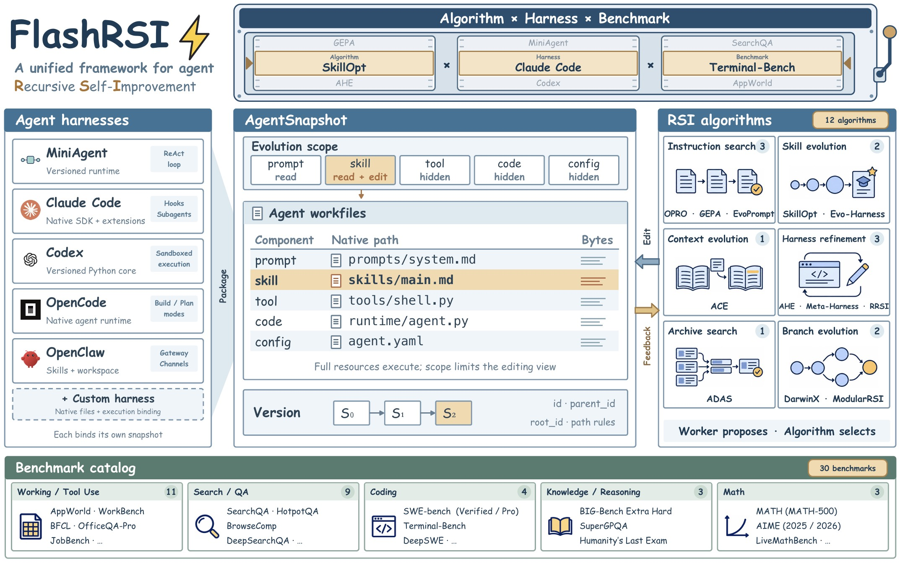

Search policies
These methods define how FlashRSI proposes edits, uses feedback, and selects the next candidate.
OPROGEPASkillOptACERRSI
Show all 12 methods
OPROGEPAEvoPromptACESkillOptEvo-HarnessAHEADASDarwinXMeta-HarnessModularRSIRRSI
FlashRSI lets you compare RSI methods, native harnesses, and benchmark tasks in one reproducible experiment. Each run connects a resource edit to the trajectories and scores it produces.

These rows come from the shared experiment setting in the README. Filter by harness to compare methods. We will add task-level trajectories when the run logs are available.
| Method | Harness | SearchQA | HotpotQA | Terminal-Bench | AppWorld |
|---|---|---|---|---|---|
| RRSI | Claude Code | 82.79+8.86 | 60.98+3.66 | 76.67+13.34 | 92.86+27.98 |
| Meta-Harness | Claude Code | 85.07+11.14 | 62.20+4.88 | 70.00+6.67 | 90.48+25.60 |
| ACE | Mini-Agent | 84.71+8.28 | 63.41+4.87 | 70.00+3.33 | 91.67+26.19 |
| SkillOpt | Mini-Agent | 82.93+6.50 | 59.76+1.22 | 66.670.00 | 91.67+26.19 |
Each run combines a search policy, the harness that executes it, and the benchmark that measures the result.
These methods define how FlashRSI proposes edits, uses feedback, and selects the next candidate.
The suites cover question answering, reasoning, math, coding, web research, documents, tool use, and interactive tasks.
FlashRSI runs the full candidate through its native harness, so edited resources stay in context.
This page already has a place for task-level trajectories, Worker proposals, Snapshot lineage, token usage, and failure clusters. Add the run logs to turn the summary into a searchable explorer.
Read the evidence modelThis panel will show task outcomes, Worker proposals, Snapshot lineage, usage, and failure clusters after you provide the raw logs.